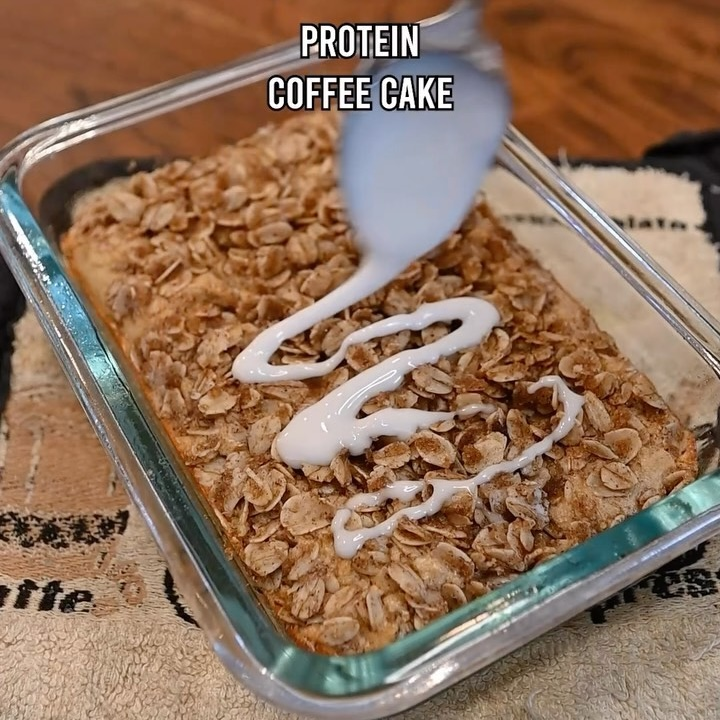

Pastel de cafe
Ingredientes:
Pastel:
- 1/2 taza de harina de avena
- 1 medida de proteína en polvo (opcional)
- 1/2 cucharadita de polvo de hornear
- 1/2 plátano
- Una pizca de canela
- 1 cucharada de azúcar morena
- Una pizca de sal
- 1/2 cucharadita de vainilla
- 1/3 taza de leche de almendra
Streusel:
- 1 cucharada de azúcar morena
- Una pizca de canela
- 1 cucharada de aceite de coco
- 1/4 taza de avena
Glaseado:
- Azúcar en polvo
- Un chorrito pequeño de leche de almendra
Instrucciones:
- Mezcla todos los ingredientes del pastel en una licuadora.
- Mezcla los ingredientes del streusel en un bol.
- Vierte la mezcla de pastel en un molde para hornear engrasado y añade el streusel por encima.
- Hornea a 350°F (180°C) durante 17-20 minutos.
- Rocía un poco de glaseado por encima.